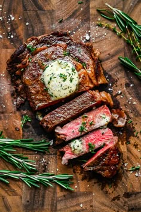

ENJOY YOUR MEAL
DELICIOUS FOOD
ALL SORTS AVAILABLE


ABOUT US.
HISTORY
The Mess has been an integral part of **KyU **since its establishment in
2017. Originally set up to provide affordable and convenient meals for
students and staff, it has grown into a vibrant social hub where
academic discussions, friendships, and memorable moments take
place.
In its early years, the Mess Name started as a small facility with limited
menu options, catering mainly to a few students. Over time, due to
increasing demand, it expanded its services, offering a variety of meals
, snacks, and beverages to accommodate diverse tastes and dietary
needs. The introduction of [any notable changes, e.g., healthier meals,
digital payment systems, extended operating hours] has further
improved the dining experience.
Today, the **Mess **is not just a place for food but a central gathering
spot for students to relax, collaborate, and unwind from the pressures
of academic life. With its [mention unique features, e.g., cozy seating,
Wi-Fi access, student discount programs], it remains a cherished part of
the campus experience.
As **KyU **continues to grow, the **Mess **remains committed to
serving the student community, maintaining its legacy as a home away
from home for all who walk through its doors.
MISSION
>Ensuring Accessibility – Offering budget-
friendly meals that cater to the diverse
needs of our campus community.
>Promoting Healthy Living – Providing
balanced, nutritious, and delicious food
options to support students’ well-being
and academic performance.
>Creating a Social Hub – Fostering a warm
and friendly space where students can
relax, collaborate, and engage in
meaningful conversations.
>Sustainability & Responsibility – Reducing
waste, sourcing ingredients responsibly,
and promoting environmentally friendly
practices.
>Continuous Improvement – Enhancing our
services based on student feedback to
ensure a great dining experience.